Задание:
Система 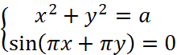 имеет четыре решения, найти a.
Построим график системы уравнений. График функции 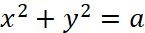 это окружность с радиусом 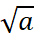 и центром в точке (0; 0), но при 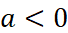 уравнение 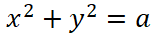 не имеет решений, то есть должно быть 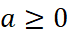 (при 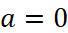 окружность становится точкой, а у системы одно решение - (0; 0)). График функции 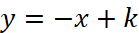 это параллельные прямые.
Когда у окружности и прямых четыре общие точки, система имеет четыре решения.
При 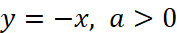 есть две общие точки.
При 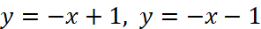 в случае касания параметр a одинаковый. Радиус будет равен 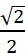, следовательно 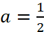, а система имеет четыре решения.